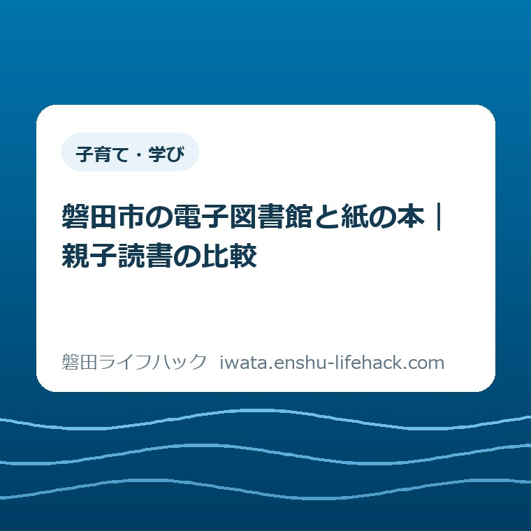

子育て・学び
磐田市の電子図書館と紙の本｜親子読書の比較

この記事の要点
Q. 図書館への往復が難しいとき、紙と電子のどちらが親子で使いやすい？
A. 磐田市の貸出上限は紙の図書が1人10冊、電子書籍が1人2点で、期間はどちらも2週間です。電子書籍の貸出は市内在住・在勤・在学者が対象。往復や返却が負担なら電子、何冊かを手元で選びたいなら紙を候補にし、今日は子どもが読みたい一冊を一緒に選びます。利用条件と貸出状況は公式案内で確認してください。
本を読む前に、親は往復と返却の予定を組んでいる
磐田市の図書館利用は、住所や勤務先・通学先、登録状況、資料の種類で条件が変わります。この記事は2026年9月24日に公式案内を確認し、家庭での親子読書に使う紙の図書と電子書籍を比べます。実際の利用可否と、その日に借りられる本は別に確認が必要です。
子どもに本を読んでほしくても、図書館へ行く時間を作るのは親です。仕事や迎えの時刻を動かし、出発の支度をし、借りた本が家のどこにあるかも気に掛ける。読み聞かせの時間だけを数えていては、その前後に家族が払っている手間が見えません。
私は大石浩之（磐田市／不動産業）です。この記事では読書量を競う話ではなく、家庭で続けられる段取りを考えます。図書館へ行けない週があることを、親の熱意の不足に置き換えたくありません。移動を減らす方法があるなら、使う理由は十分です。
ただし、電子なら子どもが喜ぶとも、紙なら落ち着いて読めるとも一律には言えません。子どもが何を読みたいか、家の画面で見やすいか、返却に出られるか。この三つを別々に見ると、家庭の事情に合う選び方ができます。
貸出上限を比較する｜紙10冊、電子2点、期間は同じ
磐田市立図書館の「利用案内」では、図書は1人10冊まで、電子書籍は1人2点まで、貸出期間はいずれも2週間です。電子書籍の貸出対象は市内在住・在勤・在学者。冊数の差はありますが、電子だけ短い期限になるわけではありません。
| 比べること | 紙の図書 | 電子書籍 |
|---|---|---|
| 1人の貸出上限 | 10冊 | 2点 |
| 貸出期間 | 2週間 | 2週間 |
| 使う準備 | 利用者登録と本の受け取り | 対象条件に合う利用者登録と通信環境・端末 |
| 返却 | 市内全館・にこっとなどの返却先へ持参 | 期限で自動返却。期限前の返却操作も可能 |
| 家庭で比べたい点 | 本を運ぶ量、置き場所、返す予定 | 読みたい作品の有無、貸出状況、画面の見やすさ |
10冊という数字は、一度に持ち帰って選べる幅を示します。物語と図鑑を並べたり、同じ本を繰り返したりする余地がある。一方で、10冊を必ず借りる必要はありません。持ち運ぶ重さや家で探す手間まで含めて、返せる量を選ぶのが実際的です。
電子の2点も、月に2点しか読めないという意味ではありません。貸出中として持てる上限と、一定期間に読む総数は別です。ただ、読みたい本が貸出中なら、画面を開いた時点ですぐ読めるとは限りません。親子で選んだ後に、作品ごとの表示を確認します。
電子図書館には、貸出方式の本以外に、ログインなしで閲覧できる地域資料なども案内されています。したがって「電子図書館の中の資料は全部2点まで」と広げて理解しないでください。ここで比べている2点は、公式利用案内にある電子書籍の貸出上限です。

電子図書館は登録と返却の負担を分けて考える
磐田市立図書館の電子書籍サービス「ご利用ガイド」には、貸出から2週間で自動返却されると記載されています。返却のために本をまとめて館へ運ぶ作業はありません。期限前に読み終えたときは、画面から返却することもできます。
電子書籍は端末とインターネット環境を使って読む仕組みです。紙の本を借りる費用だけと比べるのではなく、家庭に使える端末や通信環境があるかも見ます。この記事のために新しい端末を買うことを前提にはしません。手元の環境で読めるかから確かめる提案です。
同じ電子書籍サービスの案内では、貸出延長はできず、続けて借りるには再度の貸出手続きが必要です。予約した資料についても、予約連絡は行わず、マイページで確認する案内になっています。自動返却は便利ですが、続きを必ず途切れず読める保証とは違います。
新規登録では、市内在住・在勤・在学者向けに、来館不要の「スマート申請」が用意されています。市立図書館の利用案内は、登録から電子図書館の利用までオンラインで完了できると説明しています。ただし即時対応ではなく、登録完了メール等は原則3営業日以内という案内です。
「電子申請による事前申し込み（仮登録）」は別の方法です。こちらは申請後2週間以内に必要書類を持って来館し、登録を完了する必要があります。ネットで申請する点は似ていても、来館の有無が違います。往復を減らしたい家庭は、申請方法の名前まで確認してください。
私は、登録できていない日に「今夜すぐ電子で読もう」と約束しない方がよいと考えます。登録待ちなら、今日は読みたい作品を選ぶだけでよい。読みたい気持ちを先に受け止め、実際に借りられる日を後から確かめる方が、親子とも予定を立て直しやすいからです。
紙の本の往復は、返す館と次の用事で変わる
磐田市立図書館の利用案内では、図書館の資料は市内全館・にこっとのどこへでも返せます。紙の本は借りた館へ必ず戻さなければならない、という前提で移動を数える必要はありません。家の近くで借り、普段の用事の途中で返す組み方も候補になります。
本の返却には利用者カードは不要で、閉館時には図書返却口を使う案内があります。ただしCD・DVDなどは開館日に窓口へ返します。本と一緒に借りた資料があるときは、袋ごと同じ返却口へ入れず、資料の種類を確認する必要があります。
図書返却口へ入れた本は、その館の翌開館日に返却処理されます。返した直後に貸出状況の表示が変わるとは限りません。次に借りる予定が迫っているときは、投函した時刻とシステム上の返却完了を同じものと考えない方が安心です。
中央図書館、福田図書館、竜洋図書館、豊岡図書館、にこっと、ながふじ図書館では開館の条件が異なります。場所や使い分けは、磐田市の図書館6施設の記事で整理しています。本記事では施設紹介を繰り返さず、借りる日と返す日を一組として考えます。
暮らす地区が変われば、寄りやすい館や用事の方向も変わります。市内の位置関係を整理したいときは、磐田市の5地区を比べた記事も参考にできます。ただし同じ地区の家庭でも所要時間は違います。地区名だけで「近い」「通いやすい」とは決められません。
片道15分ならどう違うか｜家族の時間で比べる
図書館までの移動負担は、片道時間と往復回数を置くと比べやすくなります。ここでは片道15分、借りるために1往復、返すためだけに別の日に1往復する家庭を仮定します。磐田市の平均時間でも、特定の館への実測値でもありません。
この仮定では、15分×2方向×2往復で移動は合計60分です。館内で本を選ぶ時間、駐車や乗り降り、外出の支度は含めていません。本を選ぶ楽しみまで負担と呼ぶ必要はありませんが、移動だけでも家族の予定表に場所を取ることは分かります。
返却を次の貸出と同じ日に済ませれば、今回の比較で返却だけに使う別の往復はなくなります。1往復分は15分×2方向で30分。用事の途中で返すなら、自宅からの往復全体ではなく、寄り道で増える時間を数えます。60分がすべての家庭に毎回掛かるわけではありません。
登録済みで利用条件と端末環境が整っている電子貸出なら、その貸出と返却のための来館移動は0回です。ただし本を探す時間や操作の手間は残ります。「移動がなくなる」と「親の手間が一切なくなる」を分けておけば、初めて使って戸惑っても失敗扱いせずに済みます。

家族で比べるときは、借りる人と返す人が同じかも書き添えます。借りる日は休日でも、期限前に動ける人が別なら、返却日を共有する作業が要る。カレンダーに書くなら「図書館」だけでなく「誰が、何を返すか」まであると、予定を引き継ぎやすくなります。
良い点｜読書の入口を家庭の都合で変えられる
磐田市の図書館利用で良い点は、紙の受け取り・返却先を選ぶ仕組みと、電子で家から利用する仕組みがあることです。磐田市公式の「図書館サービスの向上」も、電子書籍サービスや広域的な図書館ネットワークを案内しています。
私は、紙の10冊という枠を「一度の外出で選択肢を持ち帰れる余裕」と受け取ります。子どもがその日に手に取らなかった本を、別の日に開くこともできる。家庭で並べて選びたい場合には、手元に置ける本の幅が役立つと考えます。
電子の自動返却は、返す日をもう一度確保しなくてよい点を評価します。借りた後で仕事の予定が変わっても、本を返すためだけの外出を組む必要がない。冊数の小ささだけでは測れない利点です。借りに行けない週の読書の入口として考えられます。
紙と電子は、家庭全体をどちらか一つに統一する必要もありません。紙で選びたい作品があれば紙を候補にし、外出の予定が組めない週は電子の蔵書を確かめる。私は、媒体へのこだわりより、子どもが読みたい本に届く経路を残す方を選びます。
注文したい点｜冊数の案内に、親の段取りも並べたい
磐田市の図書館案内に私が注文したい点は、貸出冊数と一緒に、登録・受け取り・返却の違いを見比べられることです。公式案内には必要な情報があります。ただ、初めて使う保護者には、複数の見出しを行き来して自分の予定へ置き換える作業が残ります。
たとえば「来館不要で登録できる」と「申請後すぐ使える」は違います。電子の貸出上限を見た直後に、登録完了までの目安と、仮登録では来館が必要なことも分かれば、子どもとの約束を立てやすい。私は、こうした違いを比較欄で並べてほしいと考えます。
紙にも同じことが言えます。借りた館と別の館に返せると先に分かれば、選ぶ館が変わる家庭もあるはずです。私は、館の名前や蔵書の紹介に加えて「どこで返せるか」を目に入りやすくする案内が、保護者の往復を減らす助けになると考えます。
一方で、電子を増やせばすべて解決する、とまでは私は言い切れません。子どもごとの読みやすさも、希望する作品が電子で提供されるかも違うからです。家庭ごとの判断を置き去りにせず、紙に戻れる入口と電子を試せる入口の両方を残してほしい。それが私の注文です。
9月16日公開の第5次計画案と、今の貸出条件は別
磐田市は2026年9月16日更新の公式ページで、「磐田市こども読書活動推進計画（第5次計画）（案）」への意見募集を案内しています。募集期間は2026年9月16日から10月15日までです。計画案が公表されたことと、現在の貸出条件が変わったことは別の話です。
本記事の10冊・2点・2週間という比較は、市立図書館の現行の利用案内に基づきます。第5次計画案によって冊数が増える、電子の利用対象が変わるといった見通しは、ここでは述べません。計画案の公表を、新しい貸出条件の開始日として読まないようにしてください。
意見を届ける場合、市公式ページの提出期限は10月15日午後5時15分必着です。郵送は同日付けの消印まで有効という例外があります。直接提出・郵送・電子申請の方法が案内されています。提出する人は、対象条件と記入事項も同じ公式ページで確認できます。
私は、家庭から伝える内容は「読書を広げてほしい」だけでなく、「返すための時間を取りにくい」「登録方法の違いで迷う」のような具体でよいと考えます。ただし、意見提出まで今日の宿題に増やすつもりはありません。まずは家庭で一冊を選ぶ、その途中で困った点があれば言葉に残す順番です。
対案・結論｜今日は、子どもが読みたい一冊を一緒に選ぶ
親子読書で今日することは、紙か電子かを永久に決めることではなく、子どもが読みたい一冊を一緒に選ぶことです。タイトルがまだ分からなければ、好きな生き物や乗り物など、探したい題材を一つ聞くところから始められます。
一冊が決まった後で、電子の蔵書と貸出状況、紙の所蔵と受け取り先を確かめます。電子で見つからないからといって、子どもの希望をすぐ別の本へ変える必要はありません。紙での入手方法を調べるか、別の日を待つかを、家庭の予定に合わせて考えます。
紙を選ぶなら、受け取れる日だけでなく返せる日も予定に置きます。電子を選ぶなら、利用者登録の完了状況と、親子が使う端末で読めるかを確かめます。施設や図書館の基本情報へ進む入口は、公共施設・図書館・公園の案内にまとめています。
読み終わった冊数を家族の成果にするより、「もう一度開きたい本が見つかった」「返却の段取りが無理なく組めた」と確かめる方が、私は続けやすいと考えます。2週間の中で同じ一冊に戻ってもよい。上限まで借りなかったことを損とは数えません。
大石の視点｜親の往復を、無料の労力として扱わない
私は、親子読書を勧めるなら、親の往復を無料の労力として扱わないことから始めたいと考えます。貸出の仕組みが整っていても、迎えと仕事の間に誰が動くのかが決まらなければ本は届きません。紙10冊と電子2点の比較で私が見るのは、数の勝ち負けではなく、借りた後まで家庭が回せるかです。
ここで書いているのは、親子で図書館を使った私自身の体験談ではなく、暮らしの段取りを重く見る立場からの意見です。紙の本を選ぶ時間そのものが楽しみになる家庭と、往復を省けることが助けになる家庭。どちらの事情も、冊数一つで優劣を決める材料にはしません。
迷うのは、移動を減らす便利さと、子どもが実物を見て選ぶ時間をどう両立するかです。私には全家庭に共通する配分は分かりません。だから、今日は一冊を一緒に選び、その本を無理なく読める方法を探す。制度や利用条件は個別事情で変わるため、最後は磐田市公式ページと市立図書館の公式案内で確認してください。
よくある質問
磐田市の紙の本と電子書籍について、家庭で迷いやすい三つの違いを整理します。以下は2026年9月24日確認の案内に基づきます。
紙の本と電子書籍は、借りられる数と期限が同じですか？
磐田市立図書館の貸出上限は、紙の図書が1人10冊、電子書籍が1人2点で、期間はいずれも2週間です。電子書籍の貸出対象は市内在住・在勤・在学者です。上限は読み切る目標ではなく、借りられる枠として考えてください。電子図書館の地域資料などは貸出方式と異なるため、資料ごとの表示も確認します。
電子図書館は、一度も来館せずに使い始められますか？
市内在住・在勤・在学者向けのスマート申請なら、登録から電子図書館利用までオンラインで完了できます。ただし即時ではなく、原則3営業日以内に登録完了メール等を送る案内です。電子申請による事前申し込み（仮登録）は別で、来館が必要です。利用条件と必要書類を公式の利用案内で確認してください。
紙の本は、借りた図書館へ返さなければいけませんか？
磐田市立図書館の資料は、市内全館・にこっとのどこへでも返せます。本は閉館時に図書返却口を使えますが、CD・DVDなどは開館日に窓口へ返します。図書返却口に入れた本は、その館の翌開館日に返却処理されます。返す場所と資料の種類を公式案内で確認し、期限に合わせて予定を組んでください。
貸出の条件・数値・手続きは変更される場合があります。家庭ごとの利用可否を含め、最後は磐田市公式ページと市立図書館の公式案内でご確認ください。
参考にした公式情報
- 磐田市：磐田市こども読書活動推進計画（第5次計画）（案）に対するパブリックコメント（2026年9月24日確認）
- 磐田市：図書館サービスの向上（2026年9月24日確認）
- 磐田市立図書館：利用案内（2026年9月24日確認）
- 磐田市立図書館 電子書籍サービス：ご利用ガイド（2026年9月24日確認）

最終確認日：2026-09-24 ／ 本記事は公表情報と執筆者の見解を分けて記載しています。制度・数値・公開状況は変更される場合があるため、最新情報は磐田市公式ページでご確認ください。